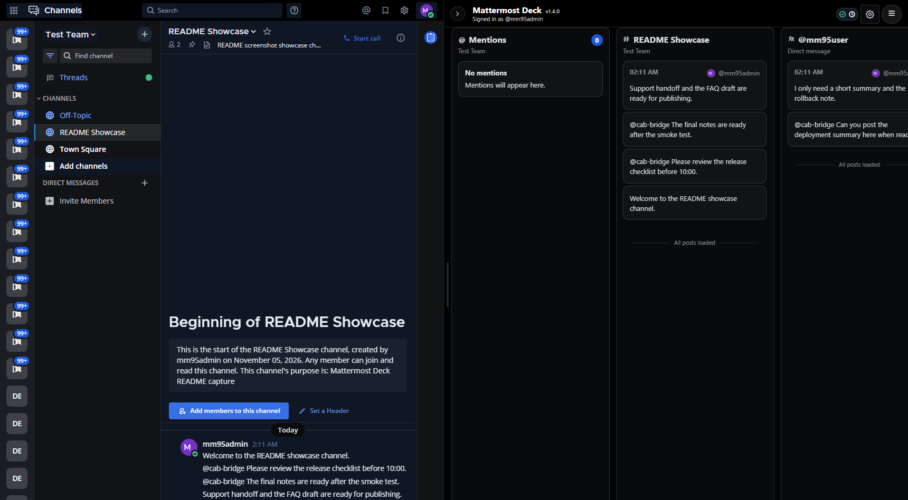
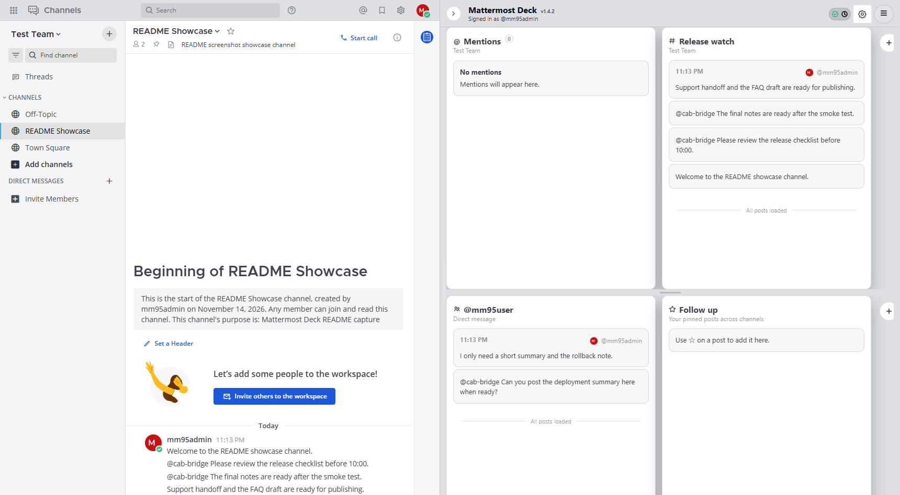
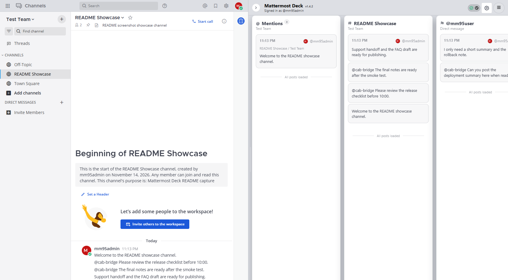
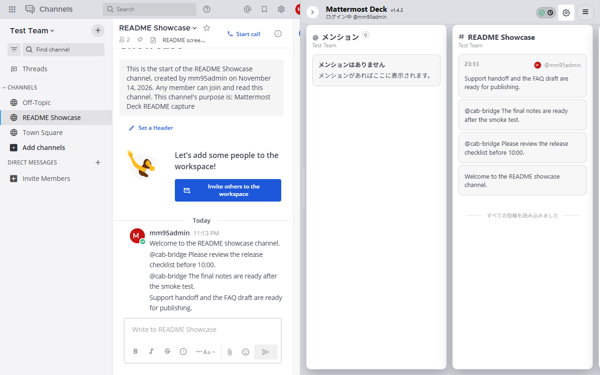

Mattermost Web の右側に、メンション・チャンネル・DM・検索結果を並べるペインを追加します。 Adds panes beside Mattermost Web for mentions, channels, DMs, and search results.
ログイン、投稿、編集、スレッド操作は Mattermost 本体のままです。Deck が足すのは読むための一覧だけで、Mattermost の設定やチーム構成は変更しません。 Signing in, posting, editing, and threads stay in Mattermost itself. Deck only adds lists to read from; it does not change your Mattermost settings or team structure.
| Browser | Google Chrome 120 以降Google Chrome 120 or later |
|---|---|
| UI | 9 言語9 languages |
| 保存先Storage | このブラウザー内のみThis browser only |
| ライセンスLicense | MIT |

幅の使い方How it uses width
通常Normal
スレッドや検索の右ペインを開いたときWith a thread or search pane open
Mattermost の本文幅は変えず、Deck が縮みます。残りが 280px を下回ると 52px のレールに折り畳み、右ペインを閉じると指定幅とスクロール位置に戻ります。 The Mattermost main area keeps its width and Deck shrinks. Below 280 px it collapses to a 52 px rail, then restores its width and scroll position when the right pane closes.
| 配置Rows | 1 段／2 段（Views で切替）。段ごとに独立してスクロールOne or two rows (Views menu), each scrolling independently |
| 高さHeight | 境界のドラッグで 20〜80%。ダブルクリックで均等Drag the divider, 20–80%. Double-click to even out |
| ペイン幅Pane width | 260–480 px |
| 別名Rename | タイトルをダブルクリック／右クリック／F2Double-click or right-click the title, or F2 |

ペインの種類Pane types＋ から追加。同じ種類を複数並べられますAdd with +. The same type can be used more than once
| メンションMentionsmentions | 参加している全チーム・全チャンネルのメンションを 1 つの一覧に。カスタムメンションキー、@all @channel @here、グループメンション、DM／GM、CRT 有効時のスレッド返信を Mattermost の設定どおりに扱います。Mentions from every joined team and channel in one list: custom keys, @all @channel @here, group mentions, DMs/GMs, and thread replies under CRT, resolved per your Mattermost settings. |
| 要確認Reviewmentions / review | 「確認済みにする」を押すまで消えない一覧。Mattermost 側で既読にしても、投稿を開いても消えません。直後 5 秒は取り消せ、履歴から戻せます。Posts stay until you confirm them explicitly; reading or opening them in Mattermost does not remove them. Undo for five seconds; restore from history. |
| チャンネル／DMChannel / DMchannelWatch, dmWatch | 特定のチャンネル、DM、グループメッセージを個別のペインとして開いたままにします。Keeps a channel, DM, or group message open as its own pane. |
| 検索Searchsearch | 検索結果をペインとして固定します。Pins a set of search results as a pane. |
| お気に入りFavoritesfavorites | 投稿の ☆ で登録する個人用リスト。Mattermost の保存済み投稿とは別で、サーバーとアカウントごとに最大 100 件。A personal list added with ☆ on a post, separate from Mattermost saved posts. Up to 100 per server and account. |
| 保存済みSavedsaved | Mattermost の保存済み投稿を一覧にします。Lists your Mattermost saved posts. |
| Diagnosticsdiagnostics | 接続状態と同期の様子。Performance タブに API の件数・平均遅延・P95・エラー率、JSONL の書き出し。Connection and sync activity. The Performance tab shows API counts, average latency, P95, error rate, and JSONL export. |


通信と保存Network and storage
| REST | ブラウザーで開いている Mattermost のセッションを使います。Deck 用の追加ログインはありません。Uses the Mattermost session already open in the browser. No separate sign-in. |
| WebSocket | Personal Access Token を設定したときだけ有効。未設定なら定期取得で更新します。Only when a personal access token is set. Otherwise Deck polls. |
| PAT | 既定は chrome.storage.session。永続保存は明示的に選んだときのみで、暗号化します。Defaults to chrome.storage.session. Persistent storage only if you choose it, encrypted. |
| 送信先Sent to | 設定した Mattermost サーバーのみ。第三者の analytics や広告はありません。Only the Mattermost server you configured. No third-party analytics or ads. |
導入手順Getting started
インストールすると Options 画面が開きます。The Options page opens after installation.
その origin への Chrome 権限が要求されます。リモートは HTTPS が必要です。Chrome asks for permission on that origin. Remote servers need HTTPS.
右側に Deck が出たら ＋ から追加します。When Deck appears on the right, add panes with +.
操作のヒントTips
- タイトルのドラッグ中に Esc で並び替えを取り消します。投稿も検索条件もスクロール位置もそのままです。Press Esc while dragging a title to cancel the move. Posts, filters, and scroll positions stay as they were.
- ペイン右端のダブルクリック、または Home で既定幅に戻します。← → でも調整できます。Double-click a pane's right edge or press Home for the default width. ← → adjust it.
- 虫眼鏡で、読み込み済みの本文と投稿者を絞り込めます。追加の通信はありません。The magnifier filters loaded posts by text or author. No extra requests.
- 使い分けは Views に保存。端末を移すときは JSON で書き出します。Save each setup as a View. Export to JSON to move machines.
- コンパクト表示では
時刻 投稿者: 本文の 1 行になります。Compact mode shows one line:time author: message. - 投稿の「…」から、投稿者や会話を非表示にできます。取得や既読には影響しません。The “…” menu on a post hides its author or conversation. Fetching and read state are unchanged.
FAQ
Mattermost の代わりに使うものですかDoes it replace Mattermost?
いいえ。ログイン、投稿、編集、スレッド操作は Mattermost 本体のままです。No. Signing in, posting, editing, and threads stay in Mattermost.
Personal Access Token は必要ですかDo I need a personal access token?
必要ありません。未設定でも定期取得で更新します。設定すると WebSocket によるリアルタイム更新になります。No. Without one Deck polls; with one it uses WebSocket for realtime updates.
Deck で読むと Mattermost 側も既読になりますかDoes reading in Deck mark posts read?
なりません。「確認済みにする」も Mattermost の既読とは別の状態です。No. “Confirm” is also separate from Mattermost read state.
データは開発者のサーバーへ送られますかIs data sent to the developer?
送られません。通信するのは設定済みの Mattermost サーバーだけです。No. Deck talks only to the Mattermost server you configured.
不具合の報告はどこへWhere do I report a problem?
GitHub Issues で受け付けています。GitHub Issues.